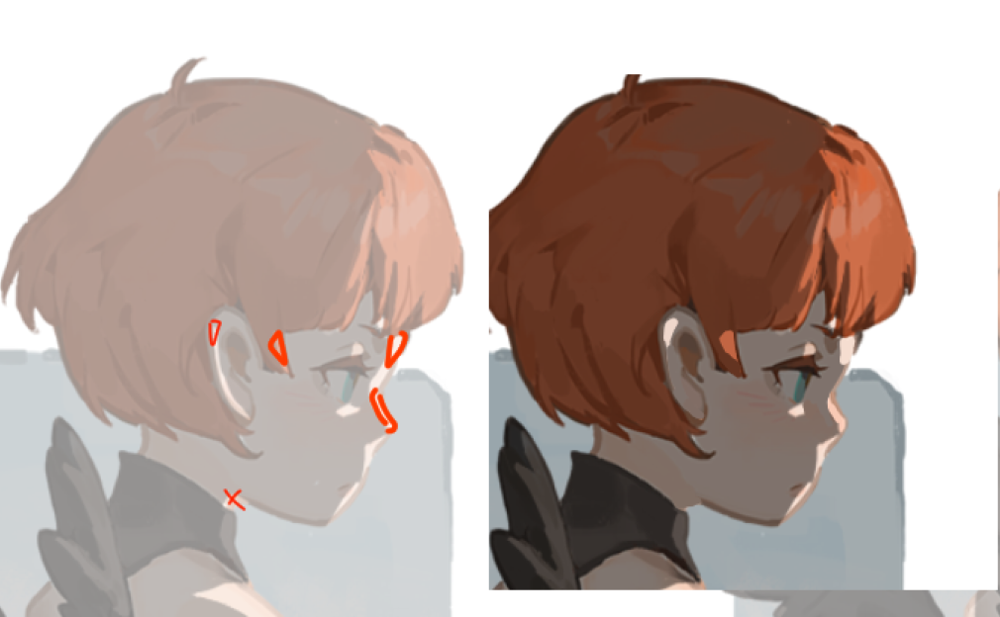

Krenz色彩 L7 作业笔记
L5，L6没啥好说的，重在体验。L6的闭塞可把我做麻了。但这两个作业其实都没啥值得记的。但其实L7也没什么可记的，但方法论值得提一下。
L7又涉及到二分和调色。
节点1.5
（我做完二分先让助教检查了一下）
关于二分……我注意到，这打光tmd其实是二维的事情而非三维的事情……参考图中，打光很多时候都不是按照具体的结构来的，而是按照形状的倾向来的，如果上方来光，那么就上方多画点光，下方少画点，其实并不是真的要证明有一个上方来的光，而是要用形状去让观众以为上方来了个光，即使画面效果和实际的打光并不一致，实际上也不需要一致啦。你无论说多少什么70%-30%，事实胜于雄辩啊……真正的说法是，主观依据客观，主观override可观。
OK，二分我被批评了——
首先，注意整碎的问题，我是大小、间距差异没做好，这也会显得碎

然后，不要出现长条形的形状，尽量做出宽窄变化：

我二分还得练嚯。不过我看有很多家伙的二分画的也不怎么好看hh
节点2
调色的目标，是让我的画面的整体的感觉接近于参考，而非是抓细节。在最终判断上，我拉远画面，检查整个画面的观感；在实际操作上，我从参考中挑选肤色或白色的亮暗面，找到一个一般的环境光色、直射光色，然后尝试让我画面中的白色、肤色等去逼近这个颜色。
调色有多种抉择——是否使用汉堡排方法，即亮面暗面分开调整；使用哪个图层混合模式。在图层的混合模式上，多做实验、探索，在实操时我也很多时候无法预测它的结果（似乎助教也无法预测，她也是尝试来的）。
但这一课，更多的我是理解了一些方法论，作画流程上的东西，我可以这么去归结一个一般的作画流程：
- 线稿，死角，固有色（可做丰富），L7的底图就是这里
- 这里做固有色的时候可以想象我是在做一种阴天的感觉——我缺光也做进去，然后本来就存在的固有色的变化也要做进去。
- 二分，调色，L7我们做了这个
- 在上面的步骤之后，整个画面的色彩就已经足够丰富，足够有感觉了，这时候就可以依据现有的颜色去开始整花活儿了，开始做塑造
能意识到，这样的流程的话还是挺模块化的，我挺喜欢，而在L8，我就可以开始真正地实践了，全跑一次所有流程，战！
本博客所有文章除特别声明外，均采用 CC BY-NC-SA 4.0 协议 ，转载请注明出处！